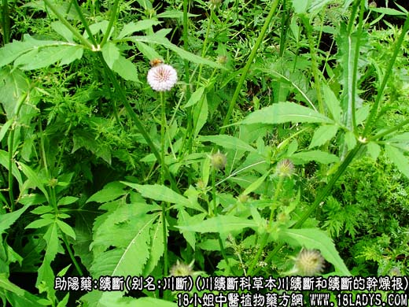
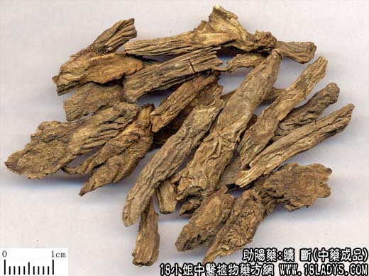
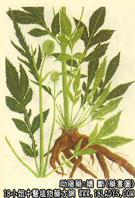

续断为常用中药。始载《神农本草经》，列为上品。
别名：川断。
来源：为川续断科（山萝卜科）多年生草本植物川续断和续断的干燥根。多为野生。
产地：主产于湖北、四川、湖南，此外陕西、贵州、云南、江西等地亦有生产。
性状鉴别：续断呈条状圆柱形，略扁缩，微弯曲，长5~15厘米，直径0.5~2厘米。表皮土褐色或灰褐色，有扭曲的纵皱及沟纹，有少数须根痕和横裂皮孔，新货柔韧，陈久则变硬。易折断，断面部平坦，灰绿色或棕色，中心木部淡褐色，维管束呈放射排列。气微香，味苦甜而后涩。
以根条粗长，无茎芦及须根，质柔韧，内灰绿色者为佳。
主要成分：含续断硷、挥发油、维生素E及有色物质。
功效与作用：补肝肾、续筋骨、活血、安胎。
炮制：切片，生用。
性味：苦、辛、微温。
归经：入肝、肾经。
功能：跌打损伤，痈疽肿痛，腰膝无力，风湿痹痛，胎动不安及崩漏等症。
临床应用：主要用于治疗腰腿痛，作用与杜仲、牛膝相似。与杜仲比较，续断苦温，兼能活血，治跌打骨折损伤较常用；而杜仲甘温，专于温补，对治疗肾虚腰痛和安胎，尤有价值。与牛膝比较，牛膝下行之力较好，续断宣补之力较胜。
1、治腰腿痛（肾虚或寒湿型），足膝无力或筋骨拘挛，常以续断、杜仲、牛膝等同用，方如续断丸。
2、治跌打损伤所致的腰膝或四肢肿痛。在跌打方剂内，加入一味续断，能加强镇痛作用。
3、治月经过多、崩漏而有腰痛、腹痛者，常配艾叶、地榆、当归、黄芪。
用量：6~12g。
处方举例：续断丸：续断、萆薢、牛膝（炒）、杜仲、木瓜各60g，研为细末，炼蜜为丸，每30g，分作4丸，每服1丸，每日2~3次，温开水或温酒送下。
注：续断古籍说法不一，品种甚乱：陶弘景按桐君采药录谓，续断蔓生，根本黄白有汁......今皆用茎叶......又呼为桑上寄生。又说为接骨树。高丈余，皮主金疮。广州又有续断藤。苏恭谓，今俗用者叶似苧而茎方，根如大蓟。苏颂谓于四棱，似苧麻叶，花红白色似益母草，根如大蓟，谨按范汪方云续断即是马蓟......市之货者亦有数种，少能辨其粗良。《本草纲目》谓......但自汉以来皆以大蓟为续断相承久矣。......今人所用以川中来，色赤而瘦，折之有烟尘其者为良焉。《中国药学大辞典》谓系辱形科续断的根。陈仁山药物生产辨云，续断产湖北......名川断。又一种产广东......名西断。
2、现市售续断除正文所述两种外尚有同属植物大头续断（浙江产苣胜子的根）在个别地区也作续断代用品。此外四川和宁夏个别地区以唇形科糙苏的根作续断使用。
3、川续断根，多数条并生，根肥壮，干后呈半角质状，显肉性。续断的根单一，根瘦小，干后柴质，木性格。另外川续断因加工方法不同，品质亦不同，如采后经过熏烤至半干或水烫笼蒸后进行发汗处理，而后再烘坑干燥的，质柔韧，内碴灰绿色，习惯认为品质好。采后直接晒干或烘干的质坚硬，内碴黄白色，质次。
4、苣胜子系川续断科大头续断的种子，也有的认为是续断的种子。种子有四棱，略呈方柱形，长约6毫米，横宽约1.5毫米，两端狭窄，淡褐色，内种仁白色，富油质。气微味苦。效用能滋补肝肾治腰膝无力，四肢酸痛，并有良好的降低血压作用。另外浙江地区尚有一种同科棱拉毛果（起绒草）与苣胜子蕾丝，有的地区也作苣胜子使用，效用是否相同尚待考证。其主要区别为种子灰褐色，长5毫米，四棱中间另有1~2条明显的纵棱线，两端平截而不狭窄。气微，味微苦。